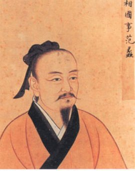

吴越文化


在文化方面，有一位重要人物，他的言行，在后世产生了强烈影响，这个人便是越王勾践的宰相范蠡。没有范蠡的辅佐，勾践可能报不了夫差之仇。但在灭吴之后，范蠡却飘然远隐，浮海至山东经营生意去了。他定居于山东的陶，后世称他为陶朱公。范蠡临走时写信给另一位大臣文种，认为勾践这个人，"可以共患难，不可以共富贵"，劝文种一起引退。文种不退，日后果然被勾践所杀。范蠡当时创造了一种对后世影响极大的良好模式，那就是"功成身退"。唐朝大诗人李白说："吾观自古贤达人，功成不退多陨身"，他所举的例子，就是伍子胥、屈原、李斯、陆机、陆云兄弟等的不幸遭遇。直到近代，清代中兴名臣曾国藩在平定太平天国之后，便解甲归农，树立了"功成身退"的又一典范.